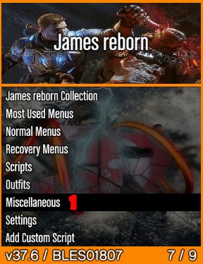
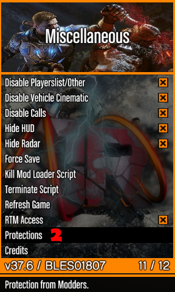
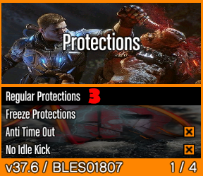
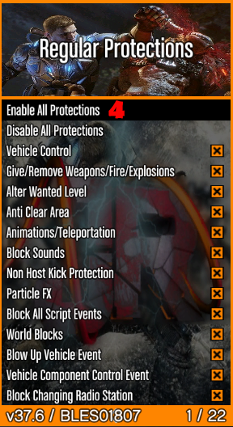
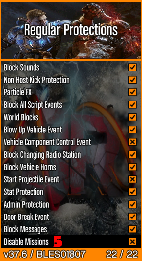
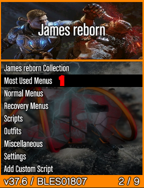
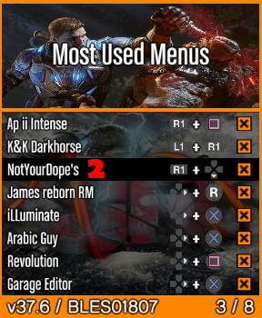
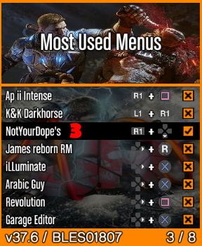
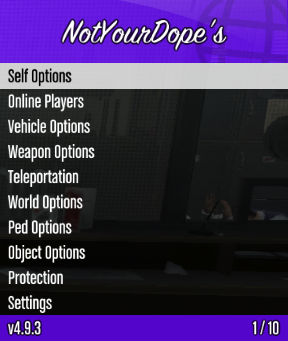

The easiest way to load a game is to press & hold L1 + L2. The installed game list will appear, choose Grand Theft Auto V from the game list. The game will load and show as a disc.
Open the menu by pressing L3 + R3. The options highlighted in black is what you will choose. These protections will keep you semi safe from other modders.
    Be sure that "Option 5" has a "X" in the box. An "X" indicates that this option is turned off. With this options turned on you will not be able to enter into your home/garage/LSC Customs etc...
For beginners a.k.a NOOBS, you will get familiar with the menu by the name of "NotYourDope's". To begin, follow the numbered images below to accomplish this task.
  Press "X" on "option 3" to turn on "NotYourDope's". Take note of the "bind buttons" to open "NotYourDope's". From there you can press "L3 + R3" to close the main menu to pick up where you left off, or simply continuously press O to zero back down to the main menu.
Ok, press to open "NotYourDope's". This menu is full of options to choose from, it is pretty much self explanatory. Simple read what the options says and you should be good. At this point you should be in story mode, you can fiddle around with this menu to get familiar with menu layouts and such. Most menu layouts are the same and we're sure you will get the hang of it in a short period of time. Depending of your style, you might want to practice in story mode or head right into the on-line action. Please be aware that this console is set up for on-line use only with Grand Theft Auto V. You can play some of the story line but you will not be able to save your progress.